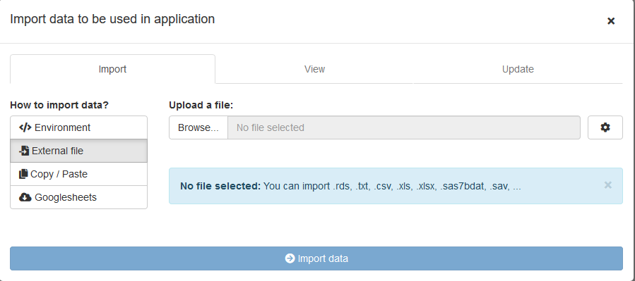
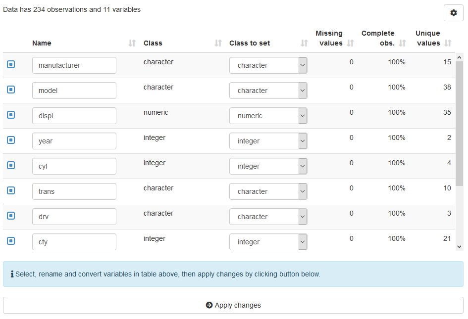
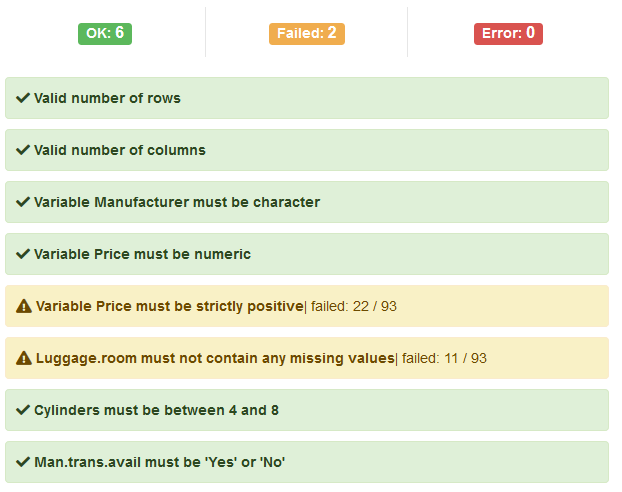
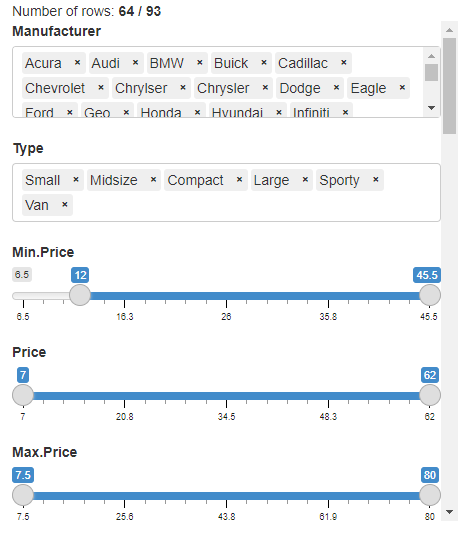

Shiny modules to import and manipulate data into an application or addin.
Overview
This package provides custom shiny modules to import data from various sources, select, rename and convert variables in a dataset and validate content with validate package.
The modules can be used in any standard shiny application or RStudio add-in.
Internationalization
Currently you can use {datamods} in the following language:  english (default),
english (default),  french,
french,  macedonian,
macedonian, 
 brazilian portuguese,
brazilian portuguese,  albanian,
albanian,  chinese,
chinese,  spanish,
spanish,  german,
german,  turkish,
turkish,  korean,
korean,  polish,
polish,  japanese.
japanese.
If you want another language to be supported, you can submit a Pull Request to add a CSV file like the one used for french (file is located in inst/i18n folder in the package, you can see it here on GitHub).
See the online vignette for more on this topic.
Installation
Install from CRAN with:
install.packages("datamods")You can install the development version of datamods from GitHub with:
remotes::install_github("dreamRs/datamods")Import
Import data from:
- environment: such as Global environment or from a package
- file: text files, Excel, SAS or SPSS format… anything that package rio can handle
- copy/paste: paste data from an other source like Excel or text file
- Google Sheet: use the URL to import the Googlesheet
- URL: use a URL to import from a flat table
Each module is available in the form import_file_ui() / import_file_server() and can be use independently.
Or all modules can be launched together in a modal window via import_modal() / import_server():

This module also allow to view imported data and to update variables.
Update
Module update_variables_ui() / update_variables_server() allow to:
- select variables of interest in a dataset
- rename variables to be used in application after that
- convert variables to change their class, from character to numeric for example

Validate
Define some validation rules with package validate and check whether data lives up to those expectations.

Filter
Interactively filter a data.frame, this module also generates the code to reproduce the filters.
